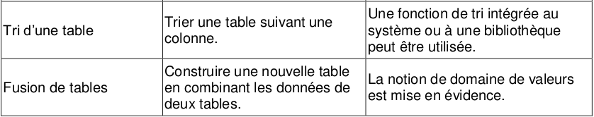
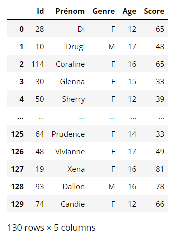
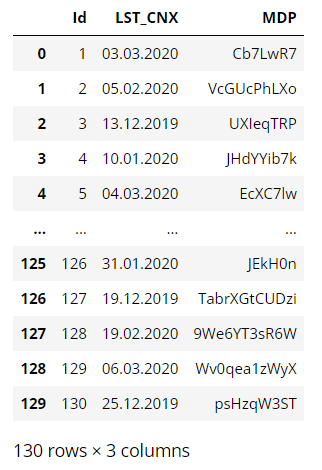

5.2 Trier et fusionner des données⚓︎

Voici le lien du notebook sur lequel vous devez faire les exercices
Nous reprenons notre fichier de joueurs de rugby du Top14.
import csv
f = open('top14.csv', "r", encoding = 'utf-8')
donnees = csv.DictReader(f)
joueurs = []
for ligne in donnees:
joueurs.append(dict(ligne))
f.close()
1. Créer une fonction filtre⚓︎
L'objectif est de créer une fonction joueurs_equipe(equipe) qui renvoie une liste contentant tous les joueurs de l'équipe equipe.
Le paramètre equipe sera donnée sous forme de chaîne de caractères.
La valeur renvoyée sera de type liste.
réponse
def joueurs_equipe(equipe):
lst_joueurs = []
for joueur in joueurs :
if joueur['Equipe'] == equipe :
lst_joueurs.append(joueur)
return lst_joueurs
Exemple d'utilisation :
>>> len(joueurs_equipe("Bordeaux"))
37
Définir de la même manière une fonction joueurs_poste(poste).
def joueurs_poste(equipe):
lst_joueurs = []
for joueur in joueurs :
if joueur['Poste'] == poste :
lst_joueurs.append(joueur)
return lst_joueurs
2. Utilisation d'une fonction de tri⚓︎
2.1 Le problème⚓︎
Comment classer les joueurs suivant leur taille ?
La fonction sorted(liste) est efficace sur les listes : elle renvoie une nouvelle liste triée dans l'ordre croissant.
>>> mylist = [4,2,8,6]
>>> mynewlist = sorted(mylist)
>>> print(mynewlist)
[2, 4, 6, 8]
Mais comment trier un dictionnaire ?
>>> test = sorted(joueurs)
---------------------------------------------------------------------------
TypeError Traceback (most recent call last)
<ipython-input-14-de081d14a3da> in <module>
----> 1 test = sorted(joueurs)
TypeError: '<' not supported between instances of 'dict' and 'dict'
Il est normal que cette tentative échoue : un dictionnaire possède plusieurs clés différentes. Ici, plusieurs clés peuvent être des critères de tri : la taille, le poids.
2.2 Un exemple de tri de dictionnaire⚓︎
>>> Simpsons = [{"Prenom" : "Bart", "age estimé": "10"},
{"Prenom" : "Lisa", "age estimé": "8"},
{"Prenom" : "Maggie", "age estimé": "1"},
{"Prenom" : "Homer", "age estimé": "38"},
{"Prenom" : "Marge", "age estimé": "37"}]
def age(personnage):
return int(personnage["age estimé"])
>>> age(Simpsons[0])
10
La création de cette fonction age() va nous permettre de spécifier une clé de tri, par le paramètre key :
Tri d'un dictionnaire 
>>> triSimpsons = sorted(Simpsons, key = age)
>>> triSimpsons
[{'Prenom': 'Maggie', 'age estimé': '1'},
{'Prenom': 'Lisa', 'age estimé': '8'},
{'Prenom': 'Bart', 'age estimé': '10'},
{'Prenom': 'Marge', 'age estimé': '37'},
{'Prenom': 'Homer', 'age estimé': '38'}]
On peut aussi inverser l'ordre de tri :
>>> triSimpsons = sorted(Simpsons, key = age, reverse = True)
>>> triSimpsons
[{'Prenom': 'Homer', 'age estimé': '38'},
{'Prenom': 'Marge', 'age estimé': '37'},
{'Prenom': 'Bart', 'age estimé': '10'},
{'Prenom': 'Lisa', 'age estimé': '8'},
{'Prenom': 'Maggie', 'age estimé': '1'}]
Exercice 1
Trier les joueurs du top14 par taille.
def taille_joueur(joueur) :
return int(joueur['Taille'])
>>> joueurs_taille_croissant = sorted(joueurs, key = taille_joueur)
Exercice 2
Trier les joueurs du top14 par poids.
def poids_joueur(joueur) :
return int(joueur['Poids'])
>>> joueurs_poids_croissant = sorted(joueurs, key = poids_joueur)
Exercice 3
Trier les joueurs de Bordeaux suivant leur Indice de Masse Corporelle (IMC )
def IMC(joueur):
masse = int(joueur['Poids'])
taille_m = int(joueur['Taille']) / 100
return masse / taille_m**2
>>> joueurs_UBB = [joueur for joueur in joueurs if joueur['Equipe'] == 'Bordeaux']
>>> joueurs_UBB_tri = sorted(joueurs_UBB, key = IMC)
>>> for joueur in joueurs_UBB_tri:
print(joueur['Nom'], IMC(joueur))
Yann LESGOURGUES 23.450918219051392
Nicolas PLAZY 24.049343594386603
Matthieu JALIBERT 24.382716049382715
Blair CONNOR 24.48565200513601
Geoffrey CROS 24.835646457268076
Maxime LUCU 25.2162533116282
Jean-Baptiste DUBIÉ 25.94548395958609
Romain BUROS 26.023048986244955
Santiago CORDERO 26.493025631204315
Alexandre ROUMAT 26.527905315784103
Cameron WOKI 26.81174510620575
Lucas MÉRET 26.82742078020452
Nans DUCUING 27.471688898385274
Ulupano SEUTENI 27.757487216946675
Clément MAYNADIER 28.59675712774171
Cyril CAZEAUX 28.823589429650035
Alexandre FLANQUART 28.835063437139564
Semi RADRADRA 28.85921231326392
Scott HIGGINBOTHAM 28.928336620644316
Ben BOTICA 29.352354500694357
Béka GORGADZE 29.394473838918284
Mahamadou DIABY 29.708012675418743
Masalosalo TUTAIA 30.036524413687044
Jandré MARAIS 30.09896949290889
Kane DOUGLAS 30.144103519262817
Seta TAMANIVALU 30.794210688390585
Rémi LAMERAT 31.01370510396975
Marco TAULEIGNE 31.523258682601902
Afa AMOSA 32.028367983070716
Laurent DELBOULBÈS 32.35554470254266
Adrien PÉLISSIÉ 33.576508653582
Lasha TABIDZE 34.18553688823959
Lekso KAULASHVILI 34.31610855329005
Peni RAVAI 34.76990504017531
Jefferson POIROT 35.713195567900854
Vadim COBILAS 36.41975308641975
Thierry PAÏVA 36.92107750472589
3. Recherche des joueurs de profil physique similaire⚓︎
3.1 Distance entre deux joueurs⚓︎
Construire une fonction distance(joueur1,joueur2) qui renvoie la somme des carrés des différences de tailles et de poids entre les joueurs joueur1 et joueur2 :
$$ d = (p_1-p_2)^2 + (t_1-t_2)^2$$
réponse
def distance(joueur1,joueur2):
p1 = int(joueur1['Poids'])
p2 = int(joueur2['Poids'])
t1 = int(joueur1['Taille'])
t2 = int(joueur2['Taille'])
return (p1 - p2)**2 + (t1 - t2)**2
3.2 Distance des joueurs avec Baptiste Serin⚓︎
Retrouvons d'abord le numéro de Baptiste Serin dans notre classement de joueurs :
>>> for i in range(len(joueurs)) :
if joueurs[i]['Nom'] == 'Baptiste SERIN' :
print(i)
530
>>> joueurs[530]
{'Equipe': 'Toulon',
'Nom': 'Baptiste SERIN',
'Poste': 'Mêlée',
'Date de naissance': '20/06/1994',
'Taille': '180',
'Poids': '79'}
Nous pouvons maintenant classer les joueurs suivant leur distance morphologique à Baptiste SERIN :
>>> def distance_Serin(joueur2):
return distance(joueurs[530], joueur2)
>>> distance_Serin(joueurs[530])
0
>>> joueurs_VS_Serin = sorted(joueurs, key = distance_Serin)
>>> joueurs_VS_Serin
4. Exercices⚓︎
Voici les liens des notebooks des exercices
5. Fusionner des données (fusion de tables)⚓︎
Nous disposons de deux tables : une table avec les scores de joueurs à un jeu en ligne et une table avec les dates de leur dernière connexion et leurs mots de passe :
Table des scores :

Table des connexions : 
On cherche à fusionner les deux tables, c'est à dire à n'en faire qu'une seule qui réunit les informations des deux tables.
Pour cela, il y a une précondition à vérifier concernant le champ Id (identifiant) qui est le descripteur commun aux deux tables :
Deux adolescents différents ne peuvent avoir le même champ Id (logique : c'est leur numéro d'identifiant)
L'algorithme de fusion présenté ici est l'algorithme naïf en langage naturel :
table_fusion = []
Pour chaque dico_score de table_scores :
Pour chaque dico_connex de table_connexions :
Si dico_score['Id'] == dico_connex['Id']:
Faire une copie de dico_score
Ajouter les champs 'LST_CNX' et 'MDP' à la copie de dico_score
Ajouter la copie de dico_score à table_fusion
import copy
table_fusion = []
for dico_score in table_scores:
for dico_connex in table_connexions:
if dico_connex['Id'] == dico_score['Id']:
dico_score_copie = copy.deepcopy(dico_score)
dico_score_copie['LST_CNX'] = dico_connex['LST_CNX']
dico_score_copie['MDP'] = dico_connex['MDP']
table_fusion.append(dico_score_copie)
break
afficher(table_fusion)
Point de vigilance :
Si la table des connexions contenait toutes les connexions des joueurs et pas seulement leur dernière connexion, un même 'Id' pourrait être présent plusieurs fois dans la table des connexions. Dans ce cas l'algorithme fonctionne encore à condition de supprimer la ligne break : on se force ainsi - pour chaque identifiant - à parcourir toute la table des connexions au lieu de s'arrêter dès qu'on trouve la première connexion correspondant à l'identifiant.
Remarque : Ici chaque 'Id' de la table des scores est présent dans la table des connexions (ce qui est logique car il faut s'être connecté pour jouer et obtenir un score). Néanmoins, si certains scores n'avaient pas été présents dans la table des connexions, l'algorithme aurait tout de même fonctionné.
6. Exercices⚓︎
Voici les liens des notebooks des exercices
test